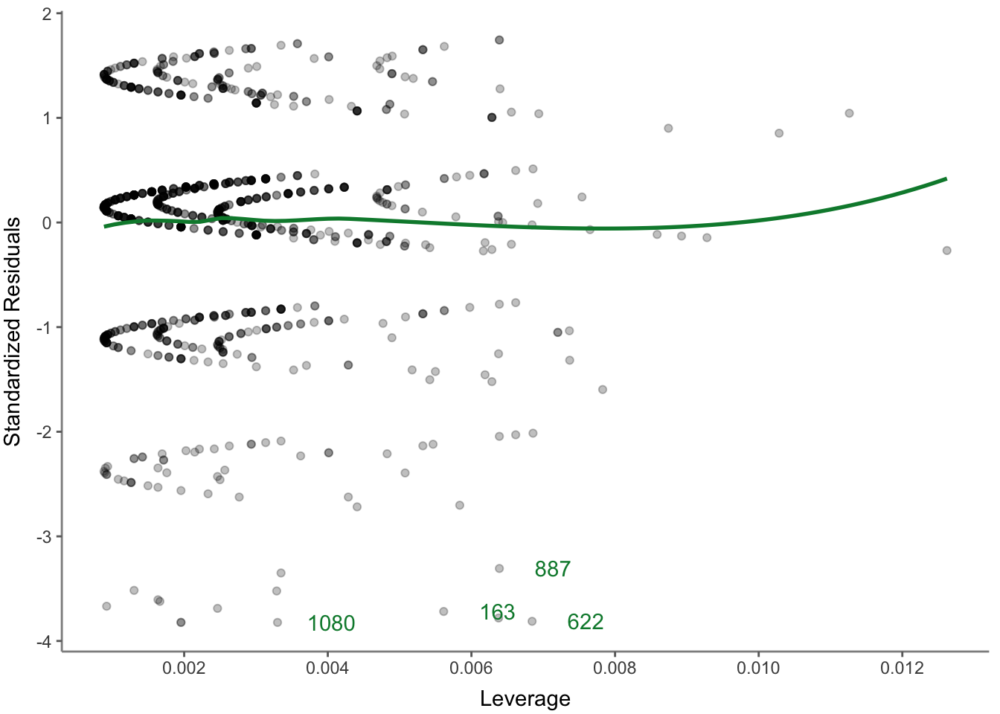
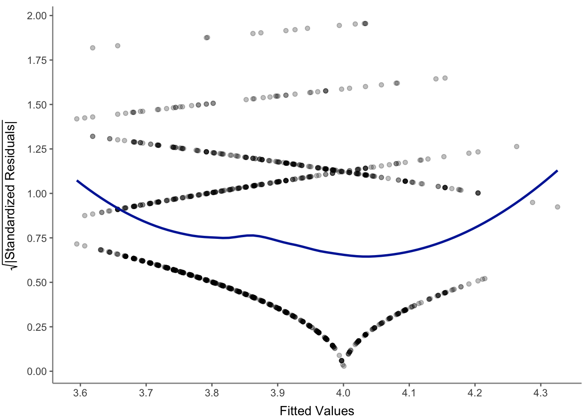
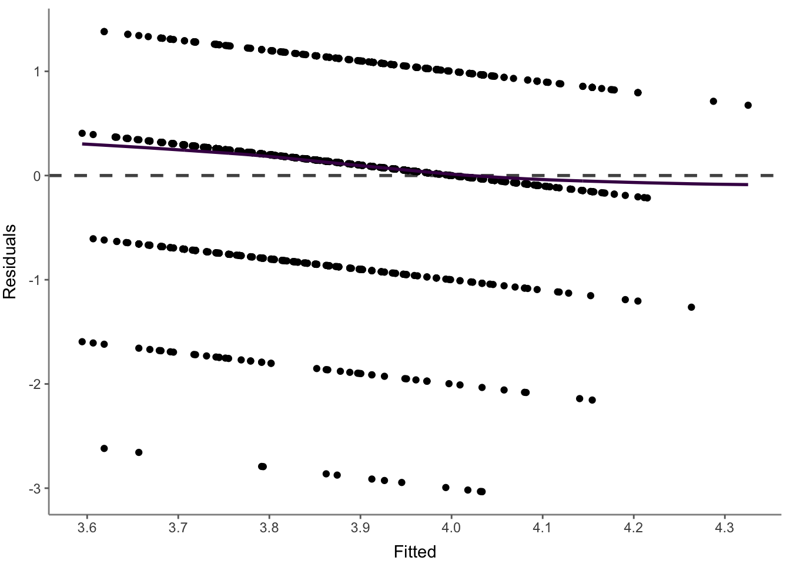

| Variable | B | SE B | LL | UL | beta | t | p | VIF | TOL |
|---|---|---|---|---|---|---|---|---|---|
| (Intercept) | 3.52 | 0.09 | 3.34 | 3.70 | --- | 38.83 | <.001 | --- | --- |
| work_experience | 0.01 | 0.00 | 0.01 | 0.02 | .160 | 5.72 | <.001 | 1.01 | .990 |
| trust_government | 0.05 | 0.03 | 0.00 | 0.10 | .050 | 1.85 | .060 | 1.01 | .990 |
| footers |
Tidycomm-tests
Regressionsanalyse mit den Daten “World of Journalism”
Es ist immer ratsam sich zunächst die Regressionskoeffizienten genau anzuschauen, was mit einer Tabelle praktisch am besten geht, wie sie in Tabelle 1 einsehbar ist.
Analyse der Voraussetzungen
In Abbildung 1 ist gut zu erkennen.

Schaut man sich darüber hinaus Abbildung 2 im schönen UZH-Design an, wird einem alles klar.

Nicht zuletzt sollte man sich die Residuen in Abhängigkeit der geschätzten Werte ansehen, was im schönen Viridis-Design in Abbildung 3 durchaus möglich ist, auch wenn das dunkle Lila nicht gut zu erkennen ist.
